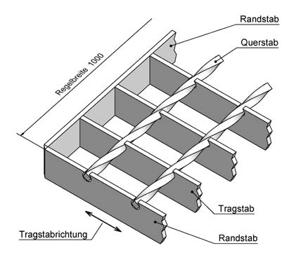
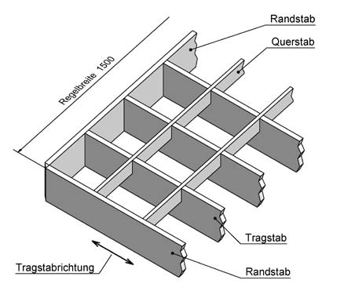
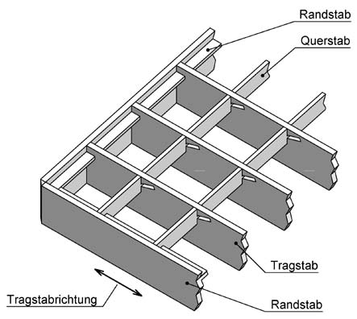
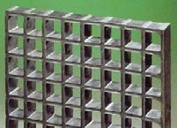
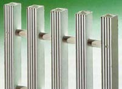
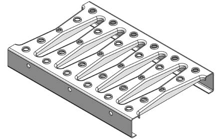

Gitterroste aus Metall werden in folgende Arten unterteilt:
Gitterroste sind allseitig durch Randstäbe gefaßt.
Schweißpressroste bestehen aus Trag-, Quer- und Randstäben, die rechtwinklig zueinander angeordnet sind (Abb. 1). Die Querstäbe, meist verdrillte Vierkantstäbe, sind in die Tragstäbe eingepresst und an jedem Knotenpunkt verschweißt.

Abb. 1 Schweißpressrost; (SP)
Pressroste bestehen aus Trag-, Quer- und Randstäben, die rechtwinklig zueinander angeordnet sind (Abb. 2). Im Regelfall sind die Querstäbe wesentlich niedriger als die Tragstäbe. Die ungeschwächten Querstäbe sind in Schlitze der Tragstäbe eingepresst. Für besondere Anwendungsfälle werden z. B. aus architektonischen oder Sonnenschutzgründen Pressroste mit höheren Querstäben hergestellt. In diesen Fällen sind sowohl die Tragstäbe als auch die Querstäbe geschlitzt.

Abb. 2 Pressrost; (P)
Bei Einsteckrosten (Abb. 3) sind entweder die Tragstäbe oder Trag- und Querstäbe geschlitzt. Eine feste Verbindung wird durch Formschluss oder Verschweißen geschaffen.

Abb. 3 Einsteckrost; (EP)
Bei der Produktion von gegossenen Kunststoffgitterrosten werden Schichten aus mit synthetischem Harz imprägnierten Rovings kreuzweise in einer Form laminiert. Die endgültige Form bildet sich nach der Aushärtung des Harzes (Abb. 4).
Kunststoffroste lassen sich auch durch die Verbindung pultrudierter GFK-Profile herstellen (Abb. 5). Sie werden vorzugsweise an Steharbeitsplätzen eingesetzt, besonders da, wo Material (z. B. Abfälle oder Späne) durch das Rost geführt werden muss. Ihre Verwendung als Bodenbelag in Verkehrswegen ist wegen der Umknickgefahr zu vermeiden. Sie resultiert aus der großen Maschenteilung und den tiefer liegenden Verbindungsstäben, die als Kontaktfläche zur Schuhsohle nicht zur Verfügung stehen.

Abb. 4 Kunststoffgitterrost, gegossen

Abb. 5 Kunststoffrost, pultrudiert
Blechprofilroste(Abb. 6) werden z. B. hergestellt durch Lochen und Verformen von Stahlblechen.

Abb. 6 Blechprofilrost